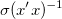

Die mehrfache lineare Regression passt mehrere unabhängige Variablen mit dem folgenden Modell an:
y = β0 + β1x1 + β2x2 + .. + βnxn
wobei βn die Koeffizienten sind.
Eine einzigartige Funktion in der mehrfachen linearen Regression ist die Ausgabe eines partiellen Hebelwirkungsdiagramms, die dabei helfen kann, den Zusammenhang zwischen der unabhängigen Variablen und einer gegebenen abhängigen Variablen zu untersuchen.
Origins Dialog Multiple Regression kann von einem aktiven Arbeitsblatt aus geöffnet werden. Im Menü:
Siehe auch:
| Neu berechnen |
Steuert die Neuberechnung der Anpassungsergebnisse bei Änderungen an den Quelldaten.
Weitere Informationen finden Sie unter Analyseergebnisse neu berechnen. |
|---|
Hilfe zum Festlegen von Bereichen finden Sie hier: Eingabedaten festlegen
| Bereich |
Der XY-Datenbereich
Abhängige Daten
Unabhängige Daten
Fehlerbalken/Gewichtung
|
|---|
|
Wenn Sie Daten vor dem Öffnen des Dialogs Multiple Regression auswählen, werden Ihre X-Spalten als Unabhängige Daten eingegeben und Ihre Y-Spalte als Abhängige Daten. Spalten, die als yErr zugewiesen sind, werden in das Feld Fehlerbalken/-gewichtung eingefügt. Mehr darüber erfahren Sie unter Spaltenzuordnungen. |
|
Seit Origin 2022b unterstützt der Dialog der MLR einen Bereich mit Namen anstatt der numerischen Eingabe (z. B. Schnittpunkt mit der Y-Achse oder benutzerdefinierte Gewichtung). Informationen dazu finden Sie in diesem OriginLab-Blogeintrag. |
| Fehler als Gewichtung |
Die Fehlerbalken werden als Wert für Gewichtung verwendet. Eine zugewiesene Fehlerbalkenspalte (yErr) muss ausgewählt sein:
|
||
|---|---|---|---|
| Fester Schnittpunkt mit der Y-Achse |
Legen Sie den Schnittpunkt mit der Y-Achse fest. |
||
| Fester Schnittpunkt mit der Y-Achse bei |
Wert des Schnittpunkts mit der Y-Achse |
||
| Skalierungsfehler mit Quadrat (Reduziertes Chi-Quadrat) |
Diese Option ist nur verfügbar, wenn Direkte Gewichtung oder Instrumental für Fehler als Gewichtung ausgewählt ist. Sie legt fest, ob das reduzierte Chi-Quadrat verwendet wird, um die Fehler der Parameter zu berechnen. Diese Option hat keinen Einfluss auf den Anpassungsprozess oder die angepasste Kurve. Standardmäßig ist diese Option aktiviert. Die Kovarianzmatrix wird berechnet mit: , ansonsten Wenn diese Option aktiviert ist, verwendet sie das reduzierte Chi-Quadrat, um die Fehlervarianz zu schätzen. Der Standardfehler des Parameters wird durch sie skaliert. Ansonsten wird die Fehlervarianz mit 1 festgelegt und der Standardfehler des Parameters wird nicht skaliert.
|
||
| Ungültige Behandlung der gewichteten Daten |
|
||
| Benutzerdefinierte Gewichtung |
Legen Sie den Wert der benutzerdefinierten Gewichtung fest. Diese Option ist verfügbar, wenn Mit benutzerdefiniertem Wert ersetzen aktiviert ist. |
| Fit-Parameter |
Wert
Standardfehler
LCL
OEG
Konfidenzniveau für Parameter (%)
t-Wert
Wahrsch. > |t|
KI halbe Breite
Weitere Informationen finden Sie unter Parameter. |
|---|---|
| Statistik zum Fit |
Anzahl der Punkte
Freiheitsgrade
R-Wert
Summe der Fehlerquadrate
R-Quadrat (COD)
Kor. R-Quadrat
Wurzel-MSE (StAbw)
Betrag der Residuen
Weitere Informationen finden Sie unter Statistik. |
| Zusammenfassung des Fits |
Aktivieren Sie diese Option, um die Tabelle der Fit-Zusammenfassung auszugeben. Diese Tabelle organisiert alle ausgewählten Fit-Parameter nach Zeile für jede Kurve (abhängige Daten). |
| ANOVA |
Die Tabelle der Varianzanalyse wird ausgegeben. Weitere Informationen finden Sie unter ANOVA-Tabelle. |
| Test auf fehlende Anpassung |
Die Ergebnisse des Tests auf fehlende Anpassung werden für die Anpassung replizierter Daten ausgegeben und dazu verwendet, die Adäquatheit des festgelegten Modells zu beurteilen. Weitere Informationen finden Sie unter Tabelle des Tests auf fehlende Anpassung. |
| Kovarianzmatrix |
Die Kovarianzmatrix wird ausgegeben. |
| Korrelationsmatrix |
Die Korrelationsmatrix wird ausgegeben. |
| Angepasste Werte |
Gibt die angepassten Werte im Ergebnisarbeitsblatt aus. |
Weitere Einzelheiten finden Sie unter: Grafische Residuenanalyse.
| Regulär |
Ausgabe der regulären Residuen (roh) |
|---|---|
| Standardisiert |
Ausgabe der standardisierten Residuen |
| Studentisiert |
Ausgabe der studentisierten (intern studentisierten) Residuen |
| Studentisiert gelöscht |
Ausgabe der studentisiert gelöschten (extern studentisierten) Residuen |
| Datensatzidentifizierer |
|
|---|---|
| Berichtstabellen |
Ziel der Berichtstabellen
|
| Angepasste Kurven |
Legen Sie Zielarbeitsmappen und -arbeitsblatt für die angepassten Werte fest.
|
| Anpassungsresiduen |
Legt Zielarbeitsmappe und -arbeitsblatt für die Residuenwerte fest.
|
| Partielle Ebenen Werte |
Legt Zielarbeitsmappe und -arbeitsblatt für die Werte der partiellen Ebenen fest.
|
| Optionale Berichtstabellen |
Notizen
Eingabedaten
Maskierte Daten
Fehlende Daten
|
Weitere Einzelheiten zu Residuen finden Sie unter: Grafische Residuenanalyse.
| Prognostiziert vs. die Ordnung der Datenzeichnung |
Legen Sie fest, ob die Diagramm der prognostizierten Werte vs. die Ordnung der Datendiagramme gezeigt werden soll. |
|---|---|
| Stapele mit Residuendiagrammen |
Legen Sie fest, ob die Residuendiagramme gestapelt mit den Diagrammen der prognostizierten Werte vs. die Ordnung der Datendiagramme gezeigt werden soll. |
| Partielle Hebelwirkungsdiagramme |
Legen Sie fest, ob die das partielle Hebelwirkungsdiagramm gezeigt werden soll. |
| Residuendiagramme |
Verwenden Sie die Bedienelemente in diesem Zweig, um die Residuendiagramme benutzerdefiniert anzupassen.
Für den ausgewählten Residuentyp können Sie bis zu fünf der folgenden Residuendiagramme ausgeben:
|
 = Werte aus der
= Werte aus der  Zeile der Spalte yErr und
Zeile der Spalte yErr und^2")
 , wobei
, wobei  = Werte aus der
= Werte aus der ^{-1}\,\!") .
.